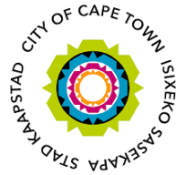
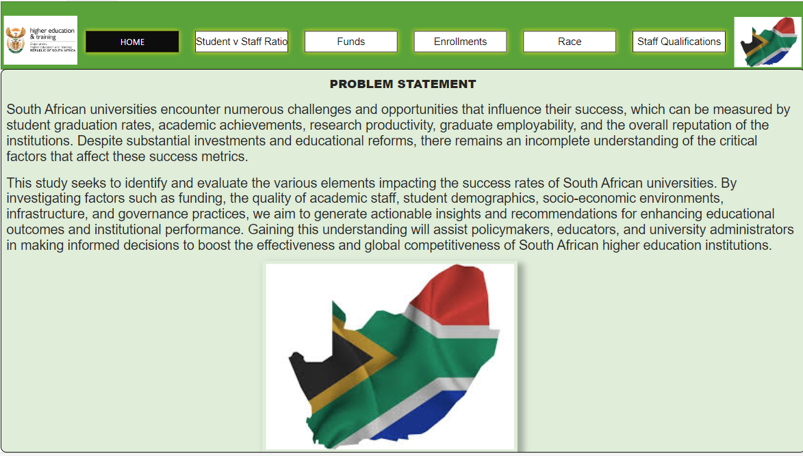
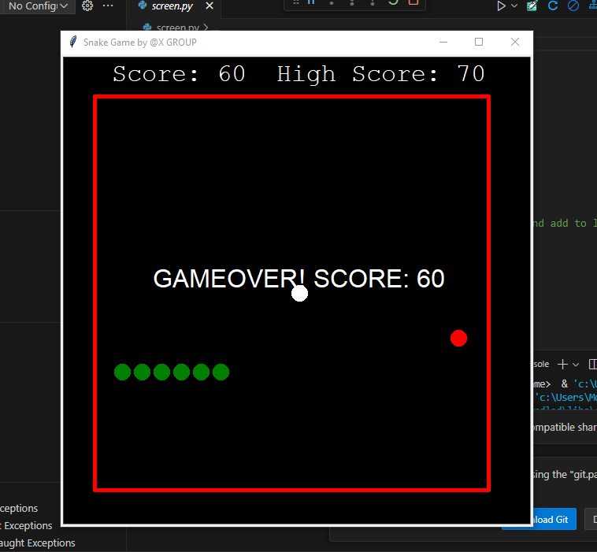
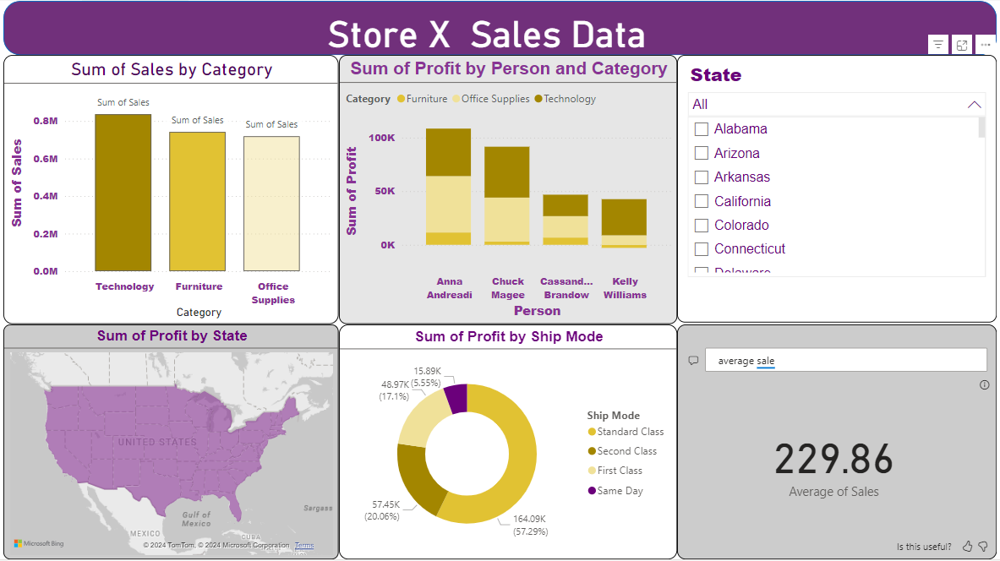

Projects
-
City of Cape Town Inaugural Hackathon - 2nd Place (2024)
This project was part of the City of Cape Town’s first-ever hackathon. We developed a solution to address urban mobility challenges, securing second place for our innovative ideas and teamwork.
-
Power BI: Factors Affecting University Success Rates
This Power BI dashboard explores various factors affecting university success rates, using historical data to provide insights into student performance trends and areas for improvement.
-
Python: Snake Game
Developed a classic Snake Game using Python. The project focused on game development principles, user input handling, and real-time rendering with the turtle graphics library.
-
Power BI: Sales Report
This project visualizes sales data across different regions and product lines. It provides actionable insights into sales performance, customer behavior, and market trends, all presented through an interactive Power BI dashboard.
-
 Comprehensive Automation Solutions with Microsoft Azure and Power Automate
Comprehensive Automation Solutions with Microsoft Azure and Power AutomateIn this project, I designed an end-to-end automation solution using Azure Logic Apps and Power Automate. It involves automating workflows, data ingestion, and reporting, showcasing my ability to integrate cloud services for business process automation.